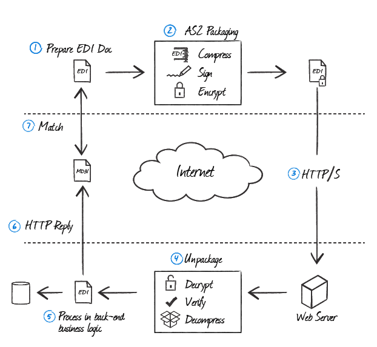

AS2 Connector
Version 26.1.9502
Version 26.1.9502
AS2 Connector
The AS2 connector supports sending and receiving messages using the Applicability Statement 2 (AS2) protocol.
Key Capabilities
- Secure and reliable B2B document exchange
- Full security support including signing, encryption, and compression
- Synchronous and asynchronous MDN receipt handling with automatic retry and resend
- Support for very large messages with streaming and restart capabilities
- Comprehensive certificate management for trading partner relationships
- Advanced features like AS2 reliability and FDA extension parsing
- Certified by the Drummond Group
Overview
An AS2 connection is configured in two places. Configure the AS2 Profiles page with a local AS2 identifier, private certificates, and other information that is global across all AS2 connections. Then configure individual AS2 connectors with connection settings specific to a single trading partner. When an input file is processed by an AS2 connector, it is packaged and sent to the specified trading partner.
When CData Arc receives a file over AS2, it attempts to route the file to a specific AS2 connector. The application uses the AS2 identifiers in the AS2 message to determine which AS2 connector should receive the file. When a file is routed to an AS2 connector, it is placed in the connector’s Output tab, or is passed along to the next connector in the flow.
AS2 connectors support all security and reliability mechanisms that make AS2 a popular protocol. See an explanation of the AS2 protocol exchange and an explanation of the certificates used for AS2 security for more information.
Video Resources
Watch this short video to learn how to quickly setup an AS2 connector. This is part one of a three-part video series that covers each step of an end-to-end B2B integration: managed file transfer (using AS2 as an example), back-end integration, and EDI translation and mapping. Links to the other parts of the series are below.
- Part Two: Back-End Integration in CData Arc—Applications and Databases
- Part Three: EDI Mapping and Integration in CData Arc
Profile Configuration
The AS2 Profile must be configured before connections can be established with individual AS2 connectors. Click Profiles on the navbar.
AS2 Profile Tab
Personal Id
Settings for identifying the local profile.
- AS2 Identifier Your AS2 identifier. Messages sent by Arc include this value as the
AS2-Fromheader. Incoming messages must have this value as theAS2-Toheader to be successfully received. AS2 Identifiers are case-sensitive.
Personal Certificate
Settings related to the private decryption and signature certificate.
- Private Certificate The certificate used to decrypt incoming messages and sign outgoing messages. Never share this certificate with external parties. Click the Create Certificate button to generate a self-signed certificate that is ready to use in an AS2 transaction: a corresponding public key is also generated with the same filename and a
.cerextension. - Certificate Password The password required to access the Private Certificate.
- Rollover Private Certificate A secondary private certificate that can be used to decrypt incoming messages if decryption with the Private Certificate fails. Only use this setting when transitioning certificates when an overlap period is necessary to accept incoming messages encrypted with either the old or the new certificate. The rollover certificate is never used to sign outgoing messages, which can cause signature verification issues when sending to trading partners that are still using the old certificate.
- Rollover Certificate Password The password required to access the Rollover Private Certificate.
Application URLs
Settings and displayed values related to accessing Arc from the public web.
- Asynchronous MDN URL The URL at which Arc listens for asynchronous Message Delivery Notification (MDN) responses. This value is automatically generated based on the Base URL and the default MDN endpoint,
ReceiveMDN.rsb. This endpoint rarely needs to be modified. - Receiving URL The URL at which Arc listens for incoming AS2 messages. Share this URL with all your trading partners.
- Publish AS2 profile settings If enabled, an endpoint is exposed where trading partners can view AS2 configuration details including identifiers, URLs, algorithms, and certificates.
- Public URL The endpoint at which trading partners can view AS2 configuration details. This URL can be shared with trading partners to simplify the communication of AS2 specifics.
- Public Certificate The public key certificate to be shared on the public configuration page. Set this to the encryption certificate that trading partners should use when sending AS2 messages to Arc. This certificate should have the same name as the Private Certificate but with a
.cerextension.
Miscellaneous
Miscellaneous settings are for specific use cases.
- Other Settings Enables you to configure hidden connector settings in a semicolon-separated list (for example,
setting1=value1;setting2=value2). Normal connector use cases and functionality should not require the use of these settings.
Connector Configuration
Once you configure the global AS2 profile settings, create and configure individual AS2 connectors for each trading partner on the Flows page.
Settings Tab
Trading Partner Info
Settings for identifying and connecting to a specific AS2 trading partner.
- Connector Id The static, unique identifier for the connector.
- Connector Type Displays the connector name and a description of what it does.
- Connector Description An optional field to provide a free-form description of the connector and its role in the flow.
- AS2 Identifier The AS2 identifier specific to the target trading partner. This value is included in the AS2 headers for outgoing messages, and it is also used to route incoming AS2 messages to the appropriate AS2 connector.
- Partner URL The trading partner’s public endpoint where outgoing AS2 messages should be sent.
Connection Info
Settings related to connection parameters for the specified trading partner.
- Send Message Security Whether to sign and/or encrypt outgoing AS2 messages. CData strongly recommends you use signatures and encryption.
- Receive Message Security Whether to require that signatures and encryption are present for incoming AS2 messages. An error is thrown if a received message does not have a required security parameter.
- Compression Whether to compress the payload of outgoing messages.
- Connection Timeout The length of time (in seconds) the connector waits for a connection response before throwing a timeout error.
- Encryption Algorithm Which encryption algorithm to use if you require message encryption.
MDN Receipts
Settings related to requesting MDNs when sending AS2 messages.
- Request MDN Receipt Whether an MDN receipt should be returned in response to outgoing AS2 messages. CData strongly recommends that you request MDN receipts.
- Security Whether the MDN receipt should include a signature block verifying the message integrity and identity of the recipient. Again, CData strongly recommends you use this option.
- Delivery Whether the MDN should be returned as a direct response to the outgoing AS2 message (Synchronous) or returned later as part of a separate connection (Asynchronous). Synchronous MDNs are recommended unless the size of the AS2 message is very large (50MB is a common threshold), in which case processing the message and delivering a synchronous MDN might strain the connection timeout duration.
Trading Partner Certificates
Settings related to the public key certificates provided by the trading partner.
- Encryption Certificate The public key certificate used for AS2 encryption when sending messages. This certificate must be paired with the trading partner’s private certificate, and the trading partner should provide a public key certificate when sharing AS2 configuration details.
- TLS Server Certificate The public key certificate used to verify the identity of an TLS/SSL server. This is only necessary if the partner’s AS2 system requires HTTPS instead of HTTP. If the trading partner does not provide a TLS server certificate, you can leave this setting blank to allow the underlying OS/JVM to perform certificate validation, or it can be set to
Any Certificateto unconditionally trust the target server’s identity.
Public Profile
The AS2 profile configuration details published on a public endpoint accessible to trading partners. This endpoint is configured on the Profile page.
Automation Tab
Automation Settings
Settings related to the automatic processing of files by the connector.
- Send Whether files arriving at the connector are automatically sent as AS2 messages.
- Retry Interval The number of minutes before a failed send is retried. A retry is triggered when the server does not respond to a send attempt, or responds negatively to communicate that the file was not received.
- Max Attempts The maximum number of times the connector processes the input file. Success is based on a successful server acknowledgement and validation of the receipt (when requested synchronously). If you set this to 0, the connect retries the file indefinitely.
- Resend Interval The number of minutes before unacknowledged messages are resent. A resend is triggered when the server receives the file, but an asynchronous MDN receipt is not provided within the expected timeframe.
- Max Attempts (async) The maximum number of times the connector processes the input file when asynchronous receipts are requested. Success is based on the return of an asynchronous receipt within the Resend Interval after a successful server acknowledgement. If a successful server acknowledgement is not returned, Max Attempts is applied instead. If this is set to 0, the connector resends the file indefinitely.
Performance
Settings related to the allocation of resources to the connector.
- Max Workers The maximum number of worker threads consumed from the threadpool to process files on this connector. If set, this overrides the default setting on the Performance Settings portion of the Advanced Settings page.
- Max Files The maximum number of files sent by each thread assigned to the connector. If set, this overrides the default setting on the Performance Settings portion of the Advanced Settings page.
Alerts Tab
Settings related to configuring alerts and Service Level Agreements (SLAs).
Connector Email Settings
Before you can execute SLAs, you need to set up email alerts for notifications. Clicking Configure Alerts opens a new browser window to the Settings page where you can set up system-wide alerts. See Alerts for more information.
Service Level Agreement (SLA) Settings
SLAs enable you to configure the volume you expect connectors in your flow to send or receive, and to set the time frame in which you expect that volume to be met. CData Arc sends emails to warn the user when an SLA is not met, and marks the SLA as At Risk, which means that if the SLA is not met soon, it will be marked as Violated. This gives the user an opportunity to step in and determine the reasons the SLA is not being met, and to take appropriate actions. If the SLA is still not met at the end of the at-risk time period, the SLA is marked as violated, and the user is notified again.
To define an SLA, click Add Expected Volume Criteria.
- If your connector has separate send and receive actions, use the radio buttons to specify which direction the SLA pertains to.
- Set Expect at least to the minimum number of transactions (the volume) you expect to be processed, then use the Every fields to specify the time frame.
- By default, the SLA is in effect every day. To change that, uncheck Everyday then check the boxes for the days of the week you want.
- Use And set status to ‘At Risk’ to indicate when the SLA should be marked as at risk.
- By default, notifications are not sent until an SLA is in violation. To change that, check Send an ‘At Risk’ notification.
The following example shows an SLA configured for a connector that expects to receive 1000 files every day Monday-Friday. An at-risk notification is sent 1 hour before the end of the time period if the 1000 files have not been received.

Note: You can turn off SLA alerts if necessary. This can be useful during maintenance windows. Click Settings on the navbar, then navigate to Alerts > General Alerts. Click the tablet and pencil icon to edit, and uncheck the SLA Alerts setting.
Advanced Tab
Very Large Message Support (VLM)
Settings used to support sending large AS2 messages.
- Streaming Whether to use HTTP Chunked Transfer Encoding when sending messages. This allows the application to send portions (chunks) of the message sequentially to avoid overloading the connection.
- AS2 Restart Whether to support resuming transmissions that were interrupted. This is useful when streaming large messages in chunks.
Note: Not all AS2 systems support this feature.
Reliability
Settings related to the Reliability feature of the AS2 protocol.
- AS2 Reliability Whether to reuse AS2 Message IDs when resending a document. This helps prevent the same document from being processed twice on the receiving side.
- AS2 Reliability Interval The number of days that the application remembers files that have been received, even if they have been removed from the Output tab. If you set a value of 0, the application never clears the received file list.
Alternate Local Profile
Settings that override the AS2 configuration on the Profiles page for this specific AS2 connector. Setting an alternate local profile lets you use different local certificates and identifiers for certain trading partners.
- Local AS2 Identifier Your AS2 identifier. Overrides the AS2 Identifier on the Profiles page.
- Private Certificate The certificate used to decrypt incoming messages and sign outgoing messages. Overrides the Private Certificate on the Profiles page.
- Certificate Password The password required to access the local private certificate.
TLS Client Authentication
Settings related to client authentication when two-way TLS authentication is required.
- Use Profile Settings Whether to use the Private Certificate configured on the Profiles page as the TLS certificate for client authentication.
- Private Certificate The private certificate presented during TLS client authentication. Only applicable if you are not using the same private certificate from the Profiles page.
- Certificate Password The password required to access the TLS client certificate.
HTTP Authentication
Settings related to HTTP client authentication.
- HTTP Authentication Whether to use client HTTP authentication.
- HTTP Authentication Type Whether to provide HTTP authentication credentials in an encrypted format (Digest) or in plain text (Basic). Only use Basic authentication if the the connection is an HTTPS connection (instead of HTTP).
- User The user credential for HTTP client authentication.
- Password The password credential for HTTP client authentication.
Custom Headers
A set of custom headers to include in the outgoing message.
Proxy Settings
These are a collection of settings that identify and authenticate to the proxy through which the AS2 connection should be routed. By default, this section uses the global settings on the Proxy Settings portion of the Security Settings page. Clear the checkbox to supply settings specific to your connector.
- Proxy Type The protocol used by a proxy-based firewall.
- Proxy Host The name or IP address of a proxy-based firewall.
- Proxy Port The TCP port for a proxy-based firewall.
- Proxy User The user name to use to authenticate with a proxy-based firewall.
- Proxy Password A password used to authenticate to a proxy-based firewall.
- Authentication Scheme Leave the default None or choose from one of the following authentication schemes: Basic, Digest, Proprietary, or NTLM.
Advanced Settings
Settings not included in the previous categories.
- Async MDN Timeout The HTTP response timeout (in seconds) to observe when returning an asynchronous MDN receipt. The default is 60 seconds.
- Duplicate File Action How the connector should behave when it receives an AS2 message with a filename that the connector has seen before (a duplicate). When set to
Continue, duplicate filenames are renamed, but no warning is sent to the trading partner. When set toWarning, the connector renames duplicate filenames and returns a warning in the MDN. When set toWarning - Ignore File, duplicate filenames are not renamed but the connector returns a warning in the MDN. When set toFailure, the connector does not accept the file and returns an error in the MDN. The connector remembers filenames that are received for the duration set in Duplicate File Interval. - Duplicate File Interval The length of time (in minutes), that a file with the same filename is considered a duplicate. In other words, the length of time the connector remembers that a specific filename has already been received. If set to 0, the filenames are stored indefinitely.
- Extension Map A set of name-value pairs that maps file extensions to the desired HTTP Content-Type header value. By default, the application maps the following file extensions to content types:
.xml>application/xml.edior.x12>application/edi-x12.edifact>application/edifact.
All other file extensions are sent with anapplication/octet-streamcontent type. To add or overwrite mappings, supply a comma-delimited list inextension=contenttypesyntax (for example,.txt=text/plain,.edi=application/edifact). - HTTP Subject The HTTP Subject header to include in the outgoing AS2 message. This header is not used in the AS2 protocol, but can be used by some solutions for additional business logic processing.
- Local File Scheme A scheme for assigning filenames to messages that are output by the connector. You can use macros in your filenames dynamically to include information such as identifiers and timestamps. For more information, see Macros.
- Message Id Supply a value to replace the suffix of the AS2 Message Id on the outbound message (the portion after the @). For example,
AS2_Test-20231206-091640691-IcJq@MyValue. - Parse FDA Extensions Whether to parse outgoing filenames to include FDA-specific headers in the AS2 message. If enabled, files on the Input tab should have the FDA center and the FDA submission type as the first two parts of the filename, separated by periods (for example,
CDRH.eMDR.myfile.txt). The application automatically translates these filename prefixes into the appropriate FDA-required headers. - Partner Signing Certificate If the trading partner uses separate private certificates to sign messages and to decrypt messages, set this to the public key certificate that corresponds to the partner’s signing certificate. The trading partners should be able to provide this public key certificate.
- Processing Delay The amount of time (in seconds) by which the processing of files placed in the Input folder is delayed. This is a legacy setting. Best practice is to use a File connector to manage local file systems instead of this setting.
- Signature Algorithm The algorithm to use when signing outgoing messages. The same algorithm is requested for the corresponding MDN receipts.
- TLS Enabled Protocols The list of TLS/SSL protocols supported when establishing outgoing connections. Best practice is to only use TLS protocols. Some obsolete operating systems do not support TLS 1.2.
- Temp Receive Directory If set, the application writes received files to the temporary directory as they are received, then moves the finished files to the Output tab. This ensures that partial files are never present on the Output tab, even when the connector receives very large files.
- HTTP Header To include headers from HTTP messages as metadata on the downloaded messages, provide the headers as a comma-delimited list.
Message
Message settings determine how the connector searches for messages and manages them after processing. You can save messages to your Sent folder or you can group them based on a Sent folder scheme, as described below.
- Save to Sent Folder Check this to copy files processed by the connector to the Sent folder for the connector.
- Sent Folder Scheme Instructs the connector to group files in the Sent folder according to the selected interval. For example, the Weekly option instructs the connector to create a new subfolder each week and store all sent files for the week in that folder. The blank setting instructs the connector to save all files directly in the Sent folder. For connectors that process many transactions, using subfolders can help keep files organized and improve performance.
Logging
Settings that govern the creation and storage of logs.
- Log Level The verbosity of logs generated by the connector. When you request support, set this to Debug.
- Log Subfolder Scheme Instructs the connector to group files in the Logs folder according to the selected interval. The Weekly option (which is the default) instructs the connector to create a new subfolder each week and store all logs for the week in that folder. Leaving this setting blank tells the connector to save all logs directly in the Logs folder. For connectors that process many transactions, using subfolders helps keep logs organized and improves performance.
- Log Messages Check this to have the log entry for a processed file include a copy of the file itself. If you disable this, you might not be able to download a copy of the file from the Input or Output tabs.
Miscellaneous
Miscellaneous settings are for specific use cases.
- Other Settings Enables you to configure hidden connector settings in a semicolon-separated list (for example,
setting1=value1;setting2=value2). Normal connector use cases and functionality should not require the use of these settings.
Establishing a Connection
Trading partners must provide some of the connection details that are required when you configure a new AS2 connector. At a minimum, these details should include:
- AS2 Identifier
- Partner URL
- Partner Certificates
AS2 Identifier
Your trading partner is identified by their AS2 identifier in an AS2 transaction. When sending outgoing requests, the AS2 identifier is used in the header of the request to indicate the recipient.
To establish an AS2 self-test, the identifier should be set to the same value as the AS2 Identifier on the Profiles page.
Note: This value is case-sensitive.
Partner URL
The Partner URL is the endpoint where the trading partner receives AS2 transmissions. Outgoing AS2 messages are sent to this target endpoint, which much be unique for each trading partner. You can test the Partner URL with a web browser to check for networking or connectivity issues.
To establish an AS2 self-test, the target URL should be identical or nearly identical to the Receiving URL on the Profiles page. You can replace the domain name from the Profiles page with the loopback address localhost to keep the AS2 transaction in the local network. An example local self-test URL is http://localhost:8001/pub/Receive.rsb.
If you do not replace the domain name with localhost, the AS2 message is routed outside of the local network. You can use this to check network configuration settings and to make sure that the message can reach Arc through any firewalls.
Trading partners might sometimes provide more than one URL: a Receiving URL and a URL for asynchronous MDNs. In this case, only the Receiving URL (Partner URL) needs to be configured; the application can read the asynchronous MDN URL from incoming AS2 transmissions.
Partner Certificates
Each AS2 connector must be configured with the public key certificate(s) for the target trading partner. The trading partner provides the certificates necessary to encrypt and verify AS2 messages exchanged with them. Arc accepts X.509 public key certificates (files with .cer, .der, or .pem extensions).
Typically the trading partner provides a single certificate, which should be configured in the Encryption Certificate field.
If the trading partner provides multiple certificates, they should clarify the purpose of each certificate. If the partner provides a full certificate chain (as acquired from a commercial certificate authority), only the leaf certificate (the last certificate in the chain) needs to be configured. Rarely, a separate public key certificate might be required to verify the partner’s digital signatures. In this case, set the signature verification certificate on the Advanced tab > Advanced Settings > Partner Signing Certificate.
Send and Receive Files
Once the AS2 profile and partner-specific AS2 connectors have been configured, files can be securely sent and received.
Send Files
In an AS2 connector, the Input tab displays the files to be sent to the target trading partner. If Send Automation is enabled on the Automation tab, files that reach the Input tab of the connector are automatically packaged and sent. Access the log files for all transmissions by expanding the row associated with the transmitted file.
The Create Test Files button lets you generate a simple series of test files to send to the trading partner.
Resend and Retry
An AS2 Resend is triggered when the trading partner is expected to return an asynchronous MDN, but fails to do so within the Resend Interval duration (60 minutes by default). The application then attempts to resend the transmission. The application continues resending the message until an MDN is received or the Max Attempts (async) is exhausted.
A Retry is triggered when the HTTP response from the trading partner indicates that the server has not received the transmission (the response is not a positive 200 OK status). This can indicate a networking or connectivity issue, which is often transient. The application retries the transmission every Retry Interval minutes until the transmission is received or the Max Attempts is exhausted.
Receive Files
In an AS2 connector, the Output tab displays the files that have been received by the application and routed to the connector (based on the AS2 identifiers present in the incoming AS2 message). Expand each file row to display a list of available logs for the transmission.
These files are available on the connector Output tab. If the connector is connected to other connectors in the flow, files are automatically moved from the Output tab of the AS2 connector to the Input tab of the next connector in the flow.
The AS2 protocol does not allow for actively pulling files from trading partners: the AS2 connector can only passively wait for a trading partner to send a file.
Troubleshooting Receiving Files
Issues that occur when receiving AS2 messages can be harder to track down than issues that occur when sending files. When an error occurs while sending a file, the error is immediately reported on the Input tab for the AS2 connector and on the Activity page. When receiving files, errors and other debug information can appear in multiple places.
After Arc receives an AS2 message, it attempts to route that message to a specific AS2 connector, based on the AS2 Identifier configured in the connector (and the AS2 identifiers present in the incoming message). There are three possible locations to check for logging information, depending on whether this routing operation succeeds:
- The Output tab for the AS2 connector (configured for this trading partner) has error logs if Arc successfully routed the message.
- The Application tab has error logs if Arc could not successfully route the message.
- If logs are not present in the AS2 connector or the application tab, the AS2 message never reached Arc in the first place.
In the last case, where there are no logs at all, the issue is likely related to network configuration. This often occurs as a result of firewall interference, so it is important to confirm that the trading partner and the system hosting Arc have opened the appropriate ports on the firewall and whitelisted IP Addresses if necessary. There might also be a simple misconfiguration on the trading partner’s side, such as sending to the incorrect endpoint (the partner should send to the Receiving URL value found in the AS2 Profile tab of the Profiles page).
What Happens in an AS2 Exchange
For all of its complexity in terms of its applications, AS2 boils down to two basic parts: A document is sent from an AS2 sender to an AS2 receiver via HTTP, a very flexible client-server protocol that serves as the backbone of the web. The receiver acknowledges the transfer by providing the sender with a receipt.
The following illustration demonstrates the steps in further detail.

Step 1: EDI Document Preparation
Any type of document can be sent in an AS2 exchange, from a text file to a PDF. Typically, however, most trading partners implement a standard for specific document types.
The most common document types are electronic data exchange (EDI) X12 documents (.x12 or .edi files), Electronic Data Interchange for Administration, Commerce and Transport (EDIFACT) documents (.edifact files), or XML files (.xml files). The preparation of the document takes place before the AS2 communication begins.
EDI is a general term for the transfer of documents between trading partners and the standards that are adhered to. It is also represented as EDI over the Internet (EDIINT).
Step 2: AS2 Packaging
The AS2 document is prepared for sending. This consists of three types of document transformation:
- If the document consists of data that is compressible (that is, not binary data), the document can be compressed using the zlib compression algorithm to reduce the size of the transported data.
- The data is typically signed using the private key of the sender to ensure the sender’s identity as the creator of the document (usually with the SHA-1 signing algorithm).
- Finally, the data can be encrypted using the receiver’s public key so only the trading partner can read the data (usually using the 3DES encryption algorithm). This step can be skipped if the data is going to be delivered by a secure transport mechanism, such as HTTPS.
S/MIME is the set of standards used for encryption and signing of a message/document. It not only governs the functions of signing and encryption, but also provides standards for the formatting of the final message so that a compliant reader can easily identify the structure of the message.
Step 3: HTTP/S Delivery
The prepared document is delivered to the trading partner over the internet to the trading partner’s Web server over the HTTP or HTTPS protocol.
Step 4: AS2 Unpackaging
The receiver of the prepared document unpackages to retrieve the EDI document. If the data is encrypted, the prepared document is decrypted using the receiver’s private key. If the data is signed, the signature on the document is verified using the sender’s public key to ensure the identity of the sender. If the document is compressed, the prepared document is decompressed to produce the original EDI document.
Step 5: EDI Processing
The AS2 receiver passes the unpackaged EDI document to a back-end process that handles the data to perform any additional business logic. Now, the EDI document is parsed and the receiver might initiate a new AS2 transaction where the roles of sender and receiver are reversed. In particular with EDI-X12 documents, a 997 functional acknowledgment is often sent to the original sender to signify that the original EDI document was processed in the back-end business logic.
Step 6: MDN Reply
The receiver sends an MDN to the sender, usually signed with the receiver’s private key. The MDN is a receipt that is returned in an AS2 exchange and used to report to the sender what was received and whether or not it was received successfully.
The MDN contains information about whether the document was successfully unpackaged, as well as a message digest that is calculated over the received payload. The MDN is then returned to the sender in one of two ways, depending on how the sender asked for the MDN to be delivered. In a synchronous transaction, the receiver returns the MDN in the HTTP reply from the receiver’s Web server. In an asynchronous transaction, the HTTP reply contains a simple acknowledgment (200 OK), and the MDN is returned over a separate connection (this is usually the case if the un-packaging of the AS2 transmission is expected to take a while).
Step 7: MDN processing
When the sender receives the MDN from the receiver, the MDN signature is verified if the MDN was signed. The status of the MDN is checked to see if the receiver was successful in processing the transaction, or if it encountered an error that was reported in the MDN. Finally, the message digest reported in the MDN is matched against a message digest that was calculated over the EDI data that was sent. With a signed MDN, the sender can verify that the receiver of the message received the entire contents of the EDI document as it was intended to be delivered.
Certificates
The AS2 connector makes use of both private and public key certificates.
Private Key Certificates
The AS2 connector allows you to specify certificates in PKCS#12 format (a .pfx file or a .p12 file). Private key certificates are used to perform two operations that only the holder of the private key should be able to perform:
- Signing data to provide proof of your identity
- Decrypting data that was intended for you
Public Key Certificates
Public key certificates are given to you by your trading partner. The AS2 connector allows you to specify public key certificates in X.509 format (a .cer or .der file). Public key certificates are used to work in reverse of the operations that require a private key. These operations include:
- Verifying signatures created by your trading partner
- Encrypting data so that only your trading partner can read it
Macros
Using macros in file naming strategies can enhance organizational efficiency and contextual understanding of data. By incorporating macros into filenames, you can dynamically include relevant information such as identifiers, timestamps, and header information, providing valuable context to each file. This helps ensure that filenames reflect details important to your organization.
CData Arc supports these macros, which all use the following syntax: %Macro%.
| Macro | Description |
|---|---|
| ConnectorID | Evaluates to the ConnectorID of the connector. |
| Ext | Evaluates to the file extension of the file currently being processed by the connector. |
| Filename | Evaluates to the filename (extension included) of the file currently being processed by the connector. |
| FilenameNoExt | Evaluates to the filename (without the extension) of the file currently being processed by the connector. |
| MessageId | Evaluates to the MessageId of the message being output by the connector. |
| RegexFilename:pattern | Applies a RegEx pattern to the filename of the file currently being processed by the connector. |
| Header:headername | Evaluates to the value of a targeted header (headername) on the current message being processed by the connector. |
| LongDate | Evaluates to the current datetime of the system in long-handed format (for example, Wednesday, January 24, 2024). |
| ShortDate | Evaluates to the current datetime of the system in a yyyy-MM-dd format (for example, 2024-01-24). |
| DateFormat:format | Evaluates to the current datetime of the system in the specified format (format). See Sample Date Formats for the available datetime formats |
| Vault:vaultitem | Evaluates to the value of the specified vault item. |
| AS2MessageId | Evaluates to the MessageId of the AS2 message being received by the connector. |
| IncomingFilename | Evaluates to the filename of the file present in the AS2 message being received by the connector. |
| AS2To | Evaluates to the value of the AS2To header on the AS2 message being received by the connector. |
| AS2From | Evaluates to the value of the AS2From header on the AS2 message being received by the connector. |
Examples
Some macros, such as %Ext% and %ShortDate%, do not require an argument, but others do. All macros that take an argument use the following syntax: %Macro:argument%
Here are some examples of the macros that take an argument:
- %Header:headername%: Where
headernameis the name of a header on a message. - %Header:mycustomheader% resolves to the value of the
mycustomheaderheader set on the input message. - %Header:ponum% resolves to the value of the
ponumheader set on the input message. - %RegexFilename:pattern%: Where
patternis a regex pattern. For example,%RegexFilename:^([\w][A-Za-z]+)%matches and resolves to the first word in the filename and is case insensitive (test_file.xmlresolves totest). - %Vault:vaultitem%: Where
vaultitemis the name of an item in the vault. For example,%Vault:companyname%resolves to the value of thecompanynameitem stored in the vault. - %DateFormat:format%: Where
formatis an accepted date format (see Sample Date Formats for details). For example,%DateFormat:yyyy-MM-dd-HH-mm-ss-fff%resolves to the date and timestamp on the file.
You can also create more sophisticated macros, as shown in the following examples:
- Combining multiple macros in one filename:
%DateFormat:yyyy-MM-dd-HH-mm-ss-fff%%EXT% - Including text outside of the macro:
MyFile_%DateFormat:yyyy-MM-dd-HH-mm-ss-fff% - Including text within the macro:
%DateFormat:'DateProcessed-'yyyy-MM-dd_'TimeProcessed-'HH-mm-ss%
Common Errors
Following is a list of common errors, their causes, and the recommended solution. Please contact arcsupport@cdata.com for more information.
ERROR
The receipt signature could not be verified: Message digest mismatch in signature
Cause
MDN receipt signatures contain a message digest that ensures the content of the message has not been altered in transit. A digest mismatch could suggest that the MDN was altered before being received, or was not generated properly on the partner’s end.
Sometimes this error can be caused by anti-virus or file security software improperly stripping part of the MDN response. There is a known issue with ESET’s Application Protocol Filtering feature where folded MDN headers can be invalidated due to whitespace removal.
Resolution
Look at the MDN returned by the partner for obvious issues. Download the .mdn file for the transaction where this error is thrown and either send it to arcsupport@cdata.com along with a description of the issue, or investigate independently.
It might also be helpful to reach out to the trading partner to confirm what AS2 solution they use. Arc is interoperable with any Drummond-certified AS2 solution.
ERROR
The receipt signature could not be verified: The certificate specified does not match the signature
Cause
MDN receipts are signed with a private key, and this signature is validated with the corresponding public key. This error suggests that the public key configured to verify signatures from this partner is incorrect.
Resolution
Often, the same public key certificate used for encryption is also used to verify signatures. In this case, check the certificate set under Settings > Encryption Certificate in the AS2 connector to make sure it is correctly configured for this trading partner.
Sometimes trading partners use a separate certificate for signatures. In this case, set the Advanced > Partner Signing Certificate setting to the public key certificate that matches the partner’s signing key.
ERROR
The receipt signature could not be verified: Message digest was encrypted with unknown algorithm
Cause
This is a known issue in older versions of the application that only supported SMIME encryption v3.1. If an MDN contains a message digest encrypted with SMIME 3.2, this error is thrown.
Resolution
All current versions of Arc, including the final published build of v2016, support SMIME 3.2. Older versions require an upgrade to resolve this error.
ERROR
MDN Error: Authentication failed
OR
MDN Error: Signature Authentication failed: Could not authenticate signer’s identity
Cause
This error is included as part of the MDN response, indicating that the trading partner could not verify the signature in the AS2 request. This suggests a general certificate mismatch between the trading parties.
Resolution
Check that the private certificate configured in the Arc AS2 profile is correct, and that the trading partner has configured the matching public key certificate on their end.
ERROR
MDN Error: Unexpected processing error
Cause
This error is thrown by the trading partner’s system and is returned as part of the MDN to indicate a failure to process the AS2 request. This is a general error, thrown when the problem is not related to signing, encryption, or compression.
Resolution
Since this error does not include specific debugging information, contact the trading partner for further information about what caused the failure.
ERROR
System error: Connection refused
Cause
This network error indicates a general connectivity problem. It is thrown when a connection attempt is made to a server that is not actively listening. This might indicate that the server has gone down, or that the connection attempt is being made to the wrong URL.
Resolution
Check that the target URL is correct. If the error persists, contact the server administrators for the target system to see if the server has gone down, or if they have more information about the issue.
ERROR
Connection failed: A connection attempt failed because the connected party did not properly respond after a period of time, or established connection failed because connected host has failed to respond
OR
Connection timed out
Cause
This network error indicates a general connectivity problem. It is thrown when the connection attempt to the server goes unanswered for a period of time (typically 60 seconds). This is often the result of firewall interference with the server’s response, but it might also indicate incorrect connection parameters.
Resolution
Check that firewalls are not preventing the server’s response from being returned. If the server is also behind a firewall, check that the IP from which the AS2 messages are being sent is whitelisted in the server’s firewall.
If firewalls have been ruled out, check that the target URL is correct.
ERROR
Synchronous MDN expected but not received
Cause
This is a general error indicating that the response to the AS2 request was not an MDN. This might indicate that the AS2 request was not sent to an AS2 server as expected. This error can also be thrown if an MDN was returned, but it was corrupted such that Arc cannot appropriately recognize it as an MDN.
Resolution
Check that the target URL is correct. Then check to see if a firewall might be stripping contents from the MDN, preventing Arc from parsing it correctly. If the issue with the MDN is unclear, find the .mdn file associated with the failed transaction and provide it to arcsupport@cdata.com along with a description of the issue.
ERROR
Unsigned MDN received, but signed MDN requested
Cause
This error is thrown when the response from the trading partner is expected to be a signed MDN receipt, but is instead some other content. This could be an unsigned MDN receipt, or a response that is not an MDN at all.
Resolution
Check the contents of the MDN log file from the failed transaction. This file contains the server reply, whether it is an unsigned MDN or some non-MDN response. The contents of the MDN log file indicate the next steps: if the server response is not an MDN at all, it might contain an error or indicate that the endpoint where the AS2 request was sent is not an AS2 receiving endpoint. If the MDN log file contains an unsigned MDN, this indicates a configuration issue in the trading partner’s system.
ERROR
Unable to find valid certification path to requested target
Cause
This error is thrown in the Java edition by the underlying Java security provider. It indicates that the SSL server certificate presented by the target web server is not trusted by the system.
Resolution
The TLS server sertificate trust can be overridden in the AS2 connector by setting the Trading Partner Certificates > TLS Server Certificate setting to the server’s public key certificate or to Any Certificate. You can acquire the server certificate by connecting to the web server through most web browsers, though this is outside the scope of Arc specifically.
ERROR
Key does not exist
Cause
This is a known issue in the Windows CryptoAPI when multiple threads are attempting to access the same private key. By default, Arc uses the Windows CryptoAPI to perform security operations like loading private certificates.
Resolution
Arc comes with an internal implementation of crypto operations, and this managed implementation can be enabled to workaround the Windows CryptoAPI limitation. Navigate to the data folder in the Arc installation directory, find the folder for the relevant AS2 connector, and open port.cfg in a text editor. Make sure the following line is present in order to enable the managed security implementation while loading certificates:
CertUseManagedSecurityAPI = true
ERROR
Input string was not in a correct format
Cause
This indicates that string validation failed for some aspect of the AS2 connector configuration. Typically the Receiving URL setting or some string processing in the Events scripts are the source of the error.
Resolution
Check that the target URL in Receiving URL begins with a valid HTTP prefix (‘http://’ for plain text connections or ‘https://’ for SSL connections) and does not contain any unintended whitespace.
If scripts are present in the Events of the connector (for example, BeforeSend or AfterReceive), check that invalid string processing is not being performed. It might be easiest to provide the scripts directly to arcsupport@cdata.com to confirm whether the scripts are causing the issue.
ERROR
500 Internal Server Error
Cause
This HTTP error indicates a general server-side failure. The AS2 message was successfully received, but an error occurred when processing the message and no further debugging information is available.
Resolution
The only client side setting that could be related to this issue is the target URL. If this is correct, consult the server-side logs to learn more about what caused the processing failure. Consult with the trading partner to see if these server logs are available.
ERROR
404 Not Found
Cause
This HTTP error indicates that no resource could be found at the target URL. This usually indicates that the first half of the URL is correct (host, port) but that the second half of the URL (the resource path) is not recognized.
Resolution
Check that the resource path in the target URL is correct. Confirm with the trading partner what the expected resource path is.
ERROR
401 Unauthorized
Cause
This HTTP error indicates that authorization is required to reach the specified URL. This can be TLS client authentication or HTTP authentication.
Resolution
If TLS client authentication is required, set the appropriate certificate in the Advanced > TLS Client Authentication section of the connector configuration. If HTTP authentication is required, set the appropriate credentials in Advanced > HTTP Authentication.
To see if HTTP Authentication is required, test a connection to the target URL with a web browser and notice any prompts for user/password credentials.
ERROR
Incoming request did not match a configured trading partner profile
Cause
When an AS2 message is received by Arc, the application attempts to route the message to a specific AS2 connector based on the configured AS2 identifiers. This error indicates that no connector could be found where the AS2 identifiers for sender and receiver match the values present in the AS2 message.
Resolution
Check the AS2 identifiers configured on both the AS2 Profiles page and the AS2 connector configured for the specific trading partner affected by this error.
ERROR
Error during handshake: The token supplied to the function is invalid
Cause
This is one of several SSL errors returned by the WinSock library (Windows Sockets). This error often occurs when an HTTP connection is attempted with a server that expects HTTPS connections.
Resolution
Confirm with the trading partner whether the AS2 connection should be over HTTP or HTTPS, and check that the target URL has the appropriate prefix and port.
ERROR
Error during handshake: the buffer supplied to a function was too small
Cause
This is one of several SSL errors returned by the system WinSock library, and is a known bug with the Windows CryptoAPI on certain server OS’s. The issue occurs when using TLS 1.2 and two specific cipher suites:
TLS_DHE_RSA_WITH_AES_128_GCM_SHA256
RLS_DHE_RSA_WITH_AES_256_GCM_SHA384
Resolution
Arc comes with an internal implementation of crypto operations, and this managed implementation can be enabled to workaround the Windows CryptoAPI limitation. Navigate to the data folder in the Arc installation directory profile.cfg file in a text editor. Make sure the following line is present under the [Application] section of this file:
UseManagedSecurityAPI = true
As an alternative to using the managed security provider, use a third-party system crypto tool to disable the two affected ciphers at the OS level.
ERROR
Error during handshake: the function requested is not supported
Cause
This is one of several SSL errors returned by the system WinSock library, and indicates a mismatch in the supported TLS/SSL versions between client and server.
Resolution
TLS versions can be enabled in the AS2 connector under Advanced > Other Settings > TLS Enabled Protocols. Confirm with the trading partner which TLS/SSL versions are supported and configure the connector appropriately.